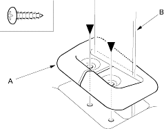
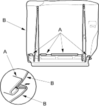
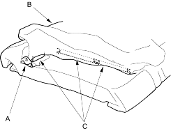
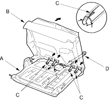

- On right seat-back: If equipped with a centre shoulder belt, remove the screws, then remove the belt holder trim (A) and remove the trim from the centre belt (B).
| Fastener Locations |
 : Screw, 2 : Screw, 2 |

- Release the hooks (A) and unzip the seat-back cover (B). The right seat-back is shown, the left seat-back is similar.

- On right seat-back: If equipped with a armrest, pass the armrest pivot (A) through the slit in the seat-back cover (B), then pull back the cover and release the hook strips (C).

- Pull out the seat-back frame (A) from the pad (B), then pull out the headrest guides (C) while pinching the end of the guides and remove them. The right seat-back with middle headrest is shown, the right seat-back without middle headrest and the left seat-back are similar.

- Remove the seat-back cover and pad from the seat-back frame. On right seat-back with centre shoulder belt, pass the centre belt (D) through the hole in the seat-back cover and pad.